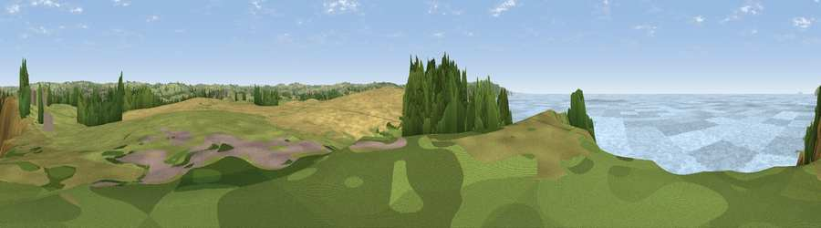

Viewpoint near Widemouth Bay
#6650 in England · top 20% of its area beats it · near Widemouth BayThe view, rendered

A 360° render of this exact spot computed from the terrain model, tree cover and land cover — summer colours, afternoon light, calibrated against photographs of famous viewpoints. Real trees, hedges and buildings will differ in detail.
The panorama
Grey silhouette: terrain skyline in each direction (720 bearings, Earth curvature and refraction included). Dashed green: skyline with trees (+15 m) and buildings (+8 m) as obstacles. Blue strip: how far the ground is visible on each bearing.
Where the view opens
Wedge length = distance to the farthest visible ground on that bearing (vegetation-aware). Rings at 10, 25 and 50 km.
What fills the view
67% water · 13% grassland · 10% woodland · 8% cropland · 2% bare ground ·
Angular shares of the visible panorama (visual magnitude), not map area. Landscape diversity 0.47 (0–1 Shannon).
Key numbers
More beautiful places nearby
The staircase of upgrades: each row has a higher view potential than everything closer. Driving times are estimates from straight-line distance, calibrated against real road routing — check an actual route before setting out.
| Place | Direction | Drive | Score |
|---|---|---|---|
| Viewpoint near Widemouth Bay | N · 0 km | ~2 min | 70.7 |
| Viewpoint near Poundstock | SSW · 4 km | ~8 min | 76.0 |
| Viewpoint near Poundstock | SSW · 5 km | ~11 min | 79.7 |
| Viewpoint near Crackington Haven | SSW · 6 km | ~13 min | 81.8 |
| Viewpoint near Crackington Haven | SSW · 12 km | ~22 min | 88.1 |
| Viewpoint near Combe Martin | NE · 59 km | ~82 min | 88.9 |
| Holdstone Hill | NE · 61 km | ~83 min | 90.2 |
| The Knoll | E · 134 km | ~158 min | 91.0 |
50.80638, -4.55677 · source: screening · position refined by local search. Computed location — check access rights before visiting.